|
Vi bygger Sveriges bästa arbetsplats för IT-konsulter
Vi bygger Sveriges bästa arbetsplats för IT-konsulter där fokus är att ha roligt i sitt arbete.
En plats dit människor söker sig naturligt. En plats dit alla är välkomna. Välkomna att utbyta ideer, att
inspireras och att inspirera.
En plats för oss som är seriösa utan att ta oss själva på för stort allvar.
Vi vill ha roliga kollegor och ha tid att umgås med dem - på arbetstid. Bl a genom Aptituddagar, Blixttalsluncher,
bolagsmöten och konferenser.
Vi tror på transparens. All information är synlig och vi tycker att om man törs fatta ett beslut och stå
för det, så gör det! Vi litar på varandras sunda förnuft och omdöme. Blir det fel rättar vi till
det och blir lite klokare.
Hittills har vi lyckats. Vi har inga hemligheter. Det är oerhört skönt! Men mest handlar det om att ha roligt!
|


 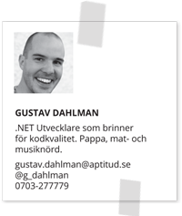
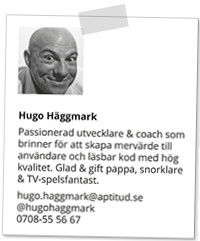
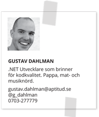
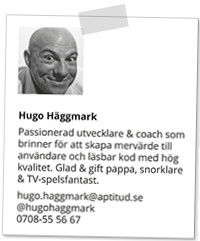

 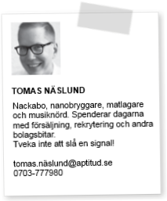
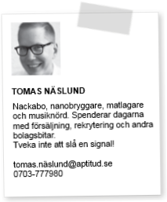
 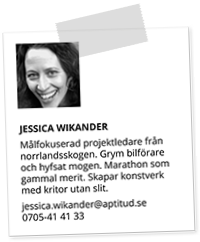
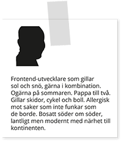
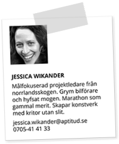
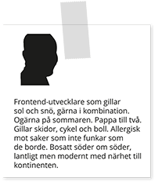